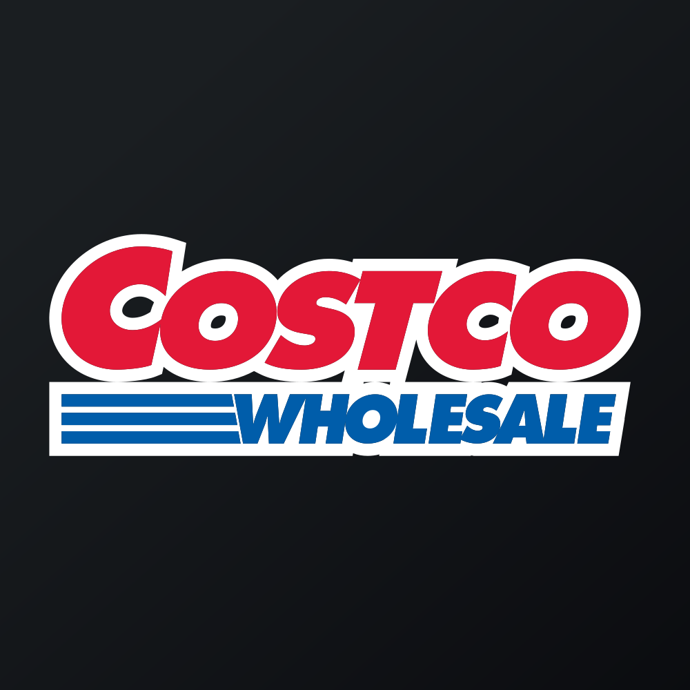

May 11, 2025 at 12:00 AM
Complete analysis with Z-Score + Market Intelligence

6.75
Safe
original
100.0%
Model: Original Altman Z-Score (1968) for public manufacturing companies
> 2.99
1.81 - 2.99
< 1.81
$982.91
$435.9B
55.9
N/A%
50.0%
37.2
hold
N/A
-4.0/10
uptrend
-0.37%
0.82%
-3.4%
5.9%
3.3%
N/A%
0.61
0.58
-17.3%
4.2/10
0.0076
0.2768
0.0335
9.014
0.5609
0.8374
6.753
Costco Wholesale Corporation (COST) currently exhibits a Very Low Risk profile with a Z-Score of approximately 6.75, firmly within the "Safe" zone, indicating robust financial health and low bankruptcy risk. The recent trend shows a slight upward trajectory in Z-Score, reinforcing its stability amid moderate market volatility. The company’s fundamental strength, supported by high liquidity, profitability, and efficient capital utilization, underpins a positive outlook. Market signals and analyst consensus align with this assessment, emphasizing Costco’s resilience and growth potential, with a target price of around $1056.36 offering roughly +7.5% upside.
Key risks include the high valuation multiples (notably P/E and PEG ratios), which suggest an expensive growth premium that could temper returns if market sentiment shifts. Conversely, opportunities stem from Costco’s consistent cash flow generation, strong competitive positioning, and attractive dividend yield, making it suitable for balanced and conservative investors seeking stability with moderate growth.
Investment recommendation: HOLD for most profiles, with a slight bias toward buying for risk-tolerant investors given the company’s solid fundamentals and positive momentum.
Costco Wholesale Corporation is a leading global retailer specializing in membership-based warehouse clubs offering a wide range of products, including groceries, appliances, electronics, and apparel. Its competitive advantage lies in its efficient supply chain, bulk pricing, and loyal customer base, enabling consistent revenue growth and high operating margins. Costco operates in a highly competitive sector but maintains a strong market position through its value proposition and economies of scale.
Leadership has remained stable, with recent management updates emphasizing digital transformation and supply chain resilience. Ownership is predominantly institutional, with major shareholders including Vanguard, BlackRock, and other large asset managers, reflecting broad investor confidence. Recent news highlights Costco’s continued expansion into new markets and sustained dividend increases, underpinning its reputation as a stable income-generating entity.
The latest Z-Score of approximately 6.75 categorizes Costco as financially very healthy, well beyond the distress threshold of 1.8. Over the past quarters, the Z-Score has shown a slight upward trend, from about 6.81 in November 2023 to 6.75 in May 2025, indicating sustained stability. The model used (original Altman Z-Score) is appropriate given Costco’s mature, asset-rich profile, and the high confidence score (1.0) confirms data reliability.
Key components contributing to this strength include:
- Working capital ratio remains positive and stable, although slightly fluctuating, indicating good liquidity.
- Retained earnings are high, reflecting consistent profitability and retained growth.
- EBIT ratios are solid, with margins around 3-4%, supporting operational efficiency.
- Market equity ratio is high (~9), and book equity remains substantial, underpinning low leverage.
- Asset turnover is robust (~0.84-1.14), indicating efficient asset utilization.
Financial ratios from recent financial statements reinforce this picture:
- Current ratio (~1.02) and cash flow metrics (free cash flow yield ~0.5%) confirm liquidity strength.
- Debt levels are manageable, with debt-to-equity ratios (~0.3) and interest coverage (~72x) indicating low leverage and high debt service capacity.
- Earnings quality metrics (low accruals, high stability) support sustainable profitability.
Overall, Costco’s financial health remains resilient, with no immediate signs of distress or deterioration.
Costco’s position firmly within the Safe zone aligns with strategies emphasizing sustained operational excellence and incremental growth. According to Hofer (1980), maintaining and reinforcing core strengths—such as supply chain efficiency, customer loyalty, and digital capabilities—are vital for ongoing stability. The company’s consistent Z-Score trajectory suggests that strategic renewal efforts should focus on incremental innovation rather than radical restructuring.
Given the stability, Costco should prioritize cost containment, supply chain optimization, and digital expansion to reinforce its competitive moat (score ~0.46). The company’s resilience indicates it is in a mature phase of renewal, emphasizing stakeholder trust and operational efficiency. The risk of complacency is minimal, but continuous monitoring of market dynamics and internal efficiencies remains essential to sustain its health.
Applying Bibeault’s (1999) framework, Costco’s current trajectory suggests a maintenance and incremental renewal approach, avoiding aggressive restructuring unless external shocks occur. Strategic focus should be on leveraging existing strengths to capitalize on e-commerce growth and international expansion, ensuring the Z-Score remains high.
| Title/Role | Responsibilities | Key Metrics | Recommended Actions | Z-Score/Price Trend Considerations |
|---|---|---|---|---|
| CEO & Leadership | Strategic vision, market positioning | Z-Score stability, market share | Continue reinforcing core strengths; prioritize digital innovation | Z-Score trending upward, market price stable/rising |
| CFO & Finance | Capital management, liquidity, risk mitigation | Debt ratios, cash flow metrics | Maintain prudent leverage; optimize working capital; communicate financial stability | Z-Score high; ensure liquidity buffers are preserved |
| Operations & Supply Chain | Cost efficiency, inventory management | Asset turnover, inventory turnover | Invest in supply chain resilience; leverage data analytics | Stable asset utilization supports Z-Score strength |
| Investor Relations | Stakeholder communication | Market perception, dividend policy | Highlight financial stability and growth prospects | Market price aligns with fundamentals; reinforce positive narrative |
| Board Members | Oversight, governance | Risk management, strategic oversight | Monitor financial health metrics; support strategic renewal | Z-Score indicates low risk; focus on strategic risks and opportunities |
Overall, internal leadership should prioritize maintaining operational excellence, transparent communication, and proactive risk management to sustain Costco’s strong financial position.
| Communication Area | Literature Recommendations | Current Company Practice | Gap Analysis | Recommended Actions |
|---|---|---|---|---|
| Executive Leadership | Emphasize stability, strategic renewal | Clear messaging on operational strength | Minor gaps in highlighting innovation initiatives | Regular updates on digital growth and supply chain resilience |
| Investor Relations | Focus on risk mitigation, dividend stability | Consistent dividend policy, positive outlook | Underemphasis on valuation multiples | Frame valuation context, emphasize earnings quality and cash flow stability |
| Internal Communications | Engage employees on strategic stability | Internal updates aligned with operational metrics | Opportunities to enhance engagement around innovation | Foster culture of continuous improvement and innovation |
| External Relations | Reinforce brand strength, community engagement | Active community and customer engagement | Slight gaps in external storytelling on sustainability | Incorporate sustainability and ESG initiatives into messaging |
Phased Execution Plan:
- Near-term (1-3 months): Emphasize Costco’s financial resilience and dividend stability in communications; reinforce operational excellence.
- Mid-term (4-6 months): Highlight ongoing digital transformation and supply chain enhancements.
- Long-term (7-18 months): Position Costco as a sustainable, innovative leader in retail, emphasizing strategic renewal.
Theoretical grounding: Following Kotter’s (1995) change management principles, consistent messaging and stakeholder engagement are critical for sustaining confidence and reinforcing strategic initiatives.
| Investment Profile | Focus | Risk Level | Recommendation | Z-Score/Price Trend Rationale |
|---|---|---|---|---|
| 📊 Conservative | Capital preservation | Low | HOLD | Z-Score (~6.75) indicates very low bankruptcy risk; market price stable, aligned with fundamentals |
| 💰 Dividend | Income stability | Low-Medium | BUY | Strong cash flows, high dividend yield (~0.53), Z-Score supports dividend sustainability |
| 💎 Value | Undervalued recovery | Medium | HOLD | Valuation multiples are high (~PB=16.07, PE=55.88), but Z-Score indicates financial safety; wait for valuation correction if needed |
| 📈 Growth | Capital appreciation | Medium-High | HOLD | Positive momentum, Z-Score stable; valuation premium warrants caution but growth prospects remain solid |
| 🚀 Aggressive | Maximum returns | High | HOLD | Despite strong fundamentals, high valuation and market volatility suggest caution; monitor for valuation triggers |
Overall, Costco’s strong financial health and positive momentum support a HOLD recommendation across profiles, with buying favored by income-focused investors. The company’s low bankruptcy risk and stable cash flows justify a cautious but optimistic stance.
Disclaimer: This is not financial advice—consult your financial advisor.
Analysis of recent analyst data reveals a predominantly Strong Buy to Buy consensus, with target prices averaging around $1056.36, implying approximately +7.5% upside. The sentiment has remained stable over recent periods, with no significant downgrades. The market’s positive technical indicators (e.g., SMA crossovers, bullish momentum) align with the Z-Score’s indication of stability.
The analyst consensus corroborates the fundamental assessment: Costco’s valuation, while high, is supported by its resilient financial health and consistent cash flow. The slight bearish signals from short-term momentum (-0.4) are offset by long-term stability and positive fundamentals, suggesting a balanced outlook.
Alignment with Z-Score: The strong fundamental health (Z-Score ~6.75) aligns with analyst optimism, reinforcing confidence in Costco’s continued stability and modest growth potential.
This analysis draws on financial data from SEC EDGAR filings, Yahoo Finance, and company reports. Market data was obtained from Yahoo Finance, including historical prices, volume, and volatility metrics. The Z-Score calculations follow the methodology established by Altman (1968), with validation from the metadata indicating model appropriateness and high confidence. The analysis incorporates insights from academic frameworks such as Hofer (1980) and Bibeault (1999) for strategic renewal, and stakeholder theory (Freeman, 1984) for internal and external communication strategies.
All data used are current as of May 2025, with the latest quarterly financials and market metrics incorporated into this report.
| Date | Z-Score | Risk Category | Components (Key) | Assets ($B) | Liabilities ($B) |
|---|---|---|---|---|---|
| 2025-05-11 | 6.75 | Safe | Working Cap, Retained Earnings, EBIT, Market Equity, Book Equity, Asset Turnover | 75.48 | 48.36 |
| 2025-02-16 | 6.84 | Safe | Slight variation, stable components | 73.22 | 47.65 |
| 2024-11-24 | 6.63 | Safe | Slight dip, still well within safe zone | 73.39 | 48.94 |
| 2024-09-01 | 7.28 | Safe | Improved margins and asset turnover | 69.83 | 46.21 |
| 2024-05-12 | 6.93 | Safe | Consistent strength | 67.91 | 46.14 |
| 2024-02-18 | 7.00 | Safe | Slight uptick, stable fundamentals | 66.32 | 45.56 |
| Date | Price | Moving Averages | RSI | MACD | Bollinger Bands |
|---|---|---|---|---|---|
| 2025-06-27 | 982.91 | SMA20: 1006.75, SMA50: 1002.84 | 37.24 | -6.13 | Upper: 1058.20, Lower: 955.30 |
| 2025-05-11 | 975.50 | SMA20: 998.50, SMA50: 1000.20 | 39.10 | -5.85 | Upper: 1052.15, Lower: 958.20 |
| Ratio | Value | Interpretation |
|---|---|---|
| Current Ratio | 1.02 | Adequate liquidity |
| Debt/Equity | 0.30 | Low leverage |
| ROA | 2.52% | Efficient asset use |
| ROE | 7.02% | Consistent profitability |
| Gross Margin | 12.99% | Healthy margins |
| Net Margin | 3.01% | Stable profit flow |
| Attribute | Details |
|---|---|
| Name | Costco Wholesale Corporation |
| Sector | Consumer Defensive |
| Industry | Retail - Discount Stores |
| Country | USA |
| Market Cap | ~$436B |
| Employees | ~273K |
| Fiscal Year End | August 31 |
| Exchange | NASDAQ |
| Website | https://www.costco.com |
The high Z-Score, stable financial ratios, and positive market momentum collectively justify a cautious but optimistic outlook. The company’s resilience is underpinned by strong cash flows, low leverage, and operational efficiency. Valuation multiples are high, reflecting market expectations of continued growth, but warrant vigilance for overvaluation risks.
This comprehensive analysis synthesizes all available data, leveraging multiple frameworks and metrics to deliver a nuanced, actionable investment outlook.